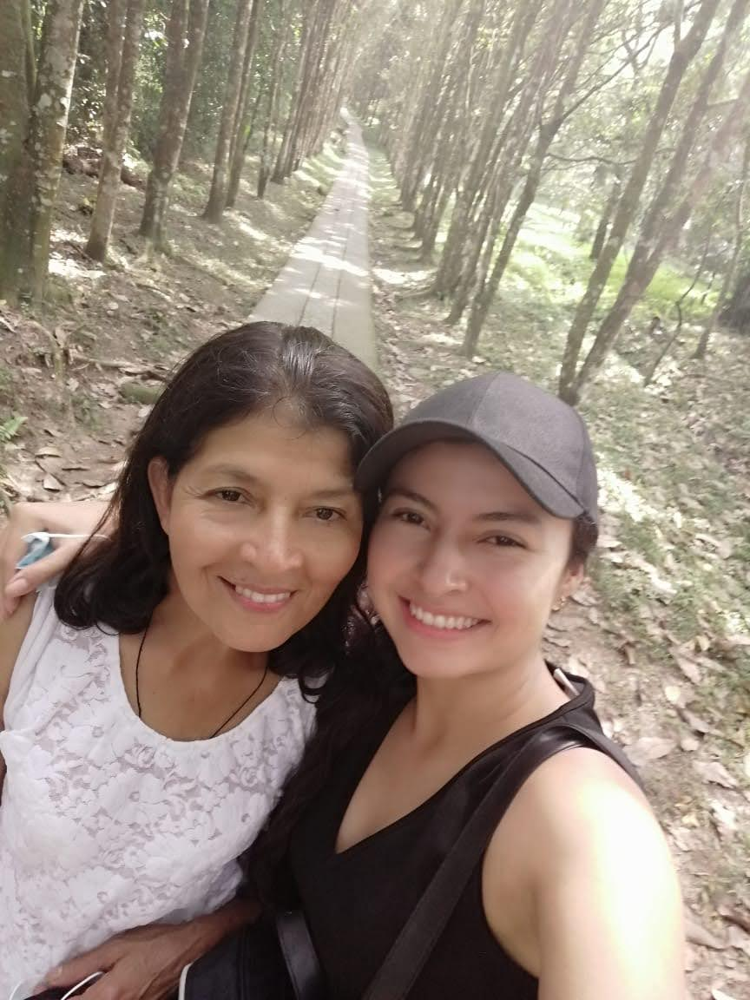

Hoy celebramos tu vocación, tu entrega y tu corazón inmenso. Eres más que una profesional: eres una luz de esperanza para quienes más lo necesitan. Esta página es un pequeño homenaje a todo lo que haces y a la persona maravillosa que eres.
Tu Sonrisa Ilumina Vidas
Una sonrisa que transforma el mundo, una persona de corazón
El trabajo social no es solo una profesión, es un acto de amor constante. Es tender la mano cuando otros la retiran, es creer en las personas cuando ellas mismas han dejado de creer, es construir puentes donde solo había muros.
Lo Que Te Hace Única üí´
Momentos que Inspiran
Cada día escribes historias de esperanza y transformación
Ser trabajadora social significa levantarse cada día con la firme convicción de que es posible hacer la diferencia. Significa ser voz de quien no la tiene, refugio en la tormenta y luz en la oscuridad. Tú encarnas todo eso y más.
Siempre en nuestro Corazón
Quisiera que crezcas tanto que te conviertas en inspiración
Con todo el cariño,
Felicidades üíï